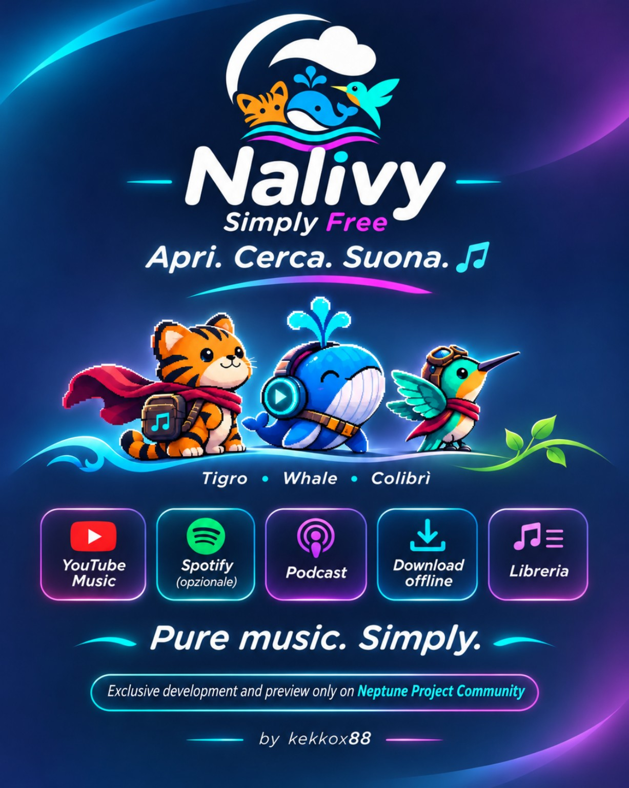

YouTube Music
Scopri e ascolta il catalogo pubblico disponibile.
NALIVY SIMPLY FREE · ANDROID
La tua musica, i tuoi podcast, la tua libreria. Un'esperienza essenziale, con l'identità inconfondibile di Nalivy.
Solo release approvate. Nessun account obbligatorio per esplorare il catalogo pubblico.

Il cuore di Nalivy, senza complicazioni inutili.
Scopri e ascolta il catalogo pubblico disponibile.
Le tue raccolte e i metadati personali, senza player Spotify.
Serie ed episodi in un'esperienza dedicata.
I contenuti scaricati disponibili anche senza rete.
Raccolte, preferiti e musica sempre a portata di mano.
Il sito mostra l'ultima release approvata pubblicata su GitHub, distinguendo le RC dalle versioni stabili.
Tre passaggi, una regola fondamentale: non disinstallare l'app per aggiornarla.
Verifica del feed ufficiale…
Se hai una versione con updater, apri Impostazioni → Aggiornamenti, verifica la disponibilità e conferma l'installazione. Nalivy seleziona l'APK compatibile e verifica integrità, package e firma.
Per la 4.1.0 · Build 104 sono previsti Aura Neptune Recovery, Simply Your Way e Smart Saver Feather Edition. La disponibilità effettiva è indicata dal feed e dalla release ufficiale.
Scarica la APK approvata e compatibile con il tuo dispositivo dalla sezione Releases.
Controlla nome, versione e, quando disponibile, l'impronta SHA-256 pubblicata.
Con la stessa firma e lo stesso package Android mantiene app e configurazioni. Conferma l'installazione.
L'installazione può essere rifiutata se firma o package non coincidono. In quel caso non disinstallare senza prima verificare i dati da conservare.
Sviluppo esclusivo e anteprime nella Neptune Project Community. Le release pubbliche approvate sono distribuite separatamente qui.